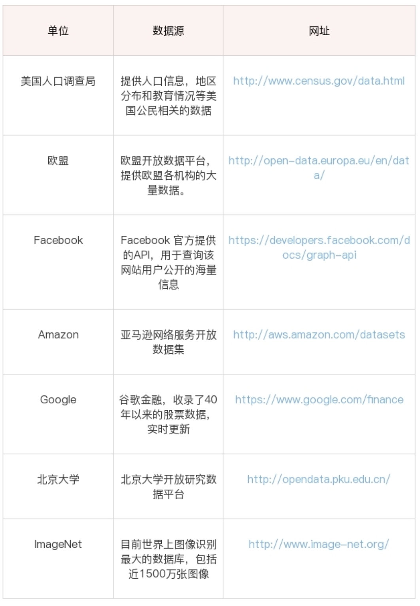

如何对用户画像建模，而建模之前我们都要进行数据采集。数据采集是数据挖掘的基础，没有数据，也没有下一阶段的数据挖掘。很多时候，我们拥有多少数据源，多少数据量，以及数据质量如何，将决定我们挖掘产出的成果会怎样。
有一句话 垃圾进，垃圾出， 指的就是你利用一批垃圾数据，那么挖掘出来的结论，也是如同垃圾一样，毫无价值。
举个例子，你做量化投资，基于大数据预测未来股票的波动，根据这个预测结果进行买卖。你当前能够拿到以往股票的所有历史数据，是否可以根据这些数据做出一个预测率高的数据分析系统呢？实际上，如果你只有股票历史数据，你仍然无法理解股票为什么会产生大幅的波动。比如，当时可能是爆发了 SARS 疫情，或者某地区发生了战争等。这些重大的社会事件对股票的影响也是巨大的。因此我们需要考虑到，一个数据的走势，是由多个维度影响的。我们需要通过多源的数据采集，收集到尽可能多的数据维度，同时保证数据的质量，这样才能得到高质量的数据挖掘结果。
数据源分类
那么，从数据采集角度来说，都有哪些数据源呢？我将数据源分成了以下的四类

这四类数据源包括了：开放数据源、爬虫抓取、传感器和日志采集。
开放数据源一般是针对行业的数据库。比如美国人口调查局开放了美国的人口信息、地区分布和教育情况数据。除了政府外，企业和高校也会开放相应的大数据，这方面北美相对来说做得好一些。国内，贵州做了不少大胆尝试，搭建了云平台，逐年开放了旅游、交通、商务等领域的数据量。要知道很多研究都是基于开放数据源进行的，否则每年不会有那么多论文发表，大家需要相同的数据集才能对比出算法的好坏。
爬虫抓取，一般是针对特定的网站或 App。如果我们想要抓取指定的网站数据，比如购物网站上的购物评价, 以及微博实时热点等，就需要我们做特定的爬虫抓取。
第三类数据源是传感器，也就是目前比较火的IOT， 例如小米智能手环，智能体重秤，街边摄像头录下来的录像，它基本上采集的是物理信息。
最后是日志采集，这个是统计用户的操作。我们可以在前端进行埋点，在后端进行脚本收集、统计，来分析网站的访问情况，以及使用瓶颈等。
数据采集
知道了有四类数据源，那如何采集到这些数据呢？
收集开源数据
我们先来看下开放数据源，教你个方法，开放数据源可以从两个维度来考虑，一个是单位的维度，比如政府、企业、高校；一个就是行业维度，比如交通、金融、能源等领域。这方面，国外的开放数据源比国内做得好一些，当然近些年国内的政府和高校做开放数据源的也越来越多。一方面服务社会，另一方面自己的影响力也会越来越大。比如，下面这张表格列举的就是单位维度的数据源。

所以如果你想找某个领域的数据源，比如金融领域，你基本上可以看下政府、高校、企业是否有开放的数据源。当然你也可以直接搜索金融开放数据源。
爬虫采集
使用爬虫做抓取爬虫抓取应该属于最常见的需求，也是我最常用的获取数据的方式。比如你想要餐厅的评价数据。当然这里要注重版权问题，而且很多网站也是有反爬机制的。最直接的方法就是使用 Python 编写爬虫代码，当然前提是你需要会 Python 的基本语法。除此之外，PHP 也可以做爬虫，只是功能不如 Python 完善，尤其是涉及到多线程的操作。
在 Python 爬虫中，基本上会经历三个过程。
- 发请求，获取内容。
使用 Requests 爬取内容。我们可以使用 Requests 库来抓取网页信息。Requests 库可以说是 Python 爬虫的利器，也就是 Python 的 HTTP 库，通过这个库爬取网页中的数据，非常方便，可以帮我们节约大量的时间。同时也可以使用目前比较成熟的爬虫框架 scrapy 来进行数据爬取。
- 解析内容
BeautifulSoup 是爬虫必学的技能。BeautifulSoup最主要的功能是从网页解析数据,其次还可以使用 XPath 解析内容。XPath 是 XML Path 的缩写，也就是 XML 路径语言。它是一种用来确定 XML 文档中某部分位置的语言，在开发中经常用来当作小型查询语言。XPath 可以通过元素和属性进行位置索引。
- 保存数据
根据你所爬取的数据量，可以选择不同的存储方式。如果你爬取的只是单次小型数据集，那么可以直接存储到txt,csv等文件中，也可以存储到，mysql数据库中，方便以后分析使用。
如果你爬取的是大型数据集，可以使用 Pandas 保存数据。Pandas 是让数据分析工作变得更加简单的高级数据结构，我们可以用 Pandas 保存爬取的数据。最后通过 Pandas 再写入到 XLS 或者 MySQL 等数据库中。如果你的爬虫任务是长期执行的，那么你就要考虑好你要用什么存储工具来存储数据了 （eg: mongoDB??? elasticsearch ????）
当然做 Python 爬虫还有很多利器，比如 Selenium，PhantomJS，或者用 Puppteteer 这种无头模式, 以上所说的三个工具，都是对付那些反爬虫比较复杂的数据源。
日志采集
为什么要做日志采集呢？日志采集最大的作用，就是通过分析用户访问情况，提升系统的性能，从而提高系统承载量。及时发现系统承载瓶颈，也可以方便技术人员基于用户实际的访问情况进行优化。日志采集也是运维人员的重要工作之一，那么日志都包括哪些呢，又该如何对日志进行采集呢？日志就是日记的意思，它记录了用户访问网站的全过程：哪些人在什么时间，通过什么渠道（比如搜索引擎、网址输入）来过，都执行了哪些操作；系统是否产生了错误；甚至包括用户的 IP、HTTP 请求的时间，用户代理等。这些日志数据可以被写在一个日志文件中，也可以分成不同的日志文件，比如访问日志、错误日志等。
日志采集可以分两种形式
通过 Web 服务器采集，例如 httpd、Nginx、Tomcat 都自带日志记录功能。同时很多互联网企业都有自己的海量数据采集工具，多用于系统日志采集，如 Hadoop 的 Chukwa、Cloudera 的 Flume、Facebook 的 Scribe 等，这些工具均采用分布式架构，能够满足每秒数百 MB 的日志数据采集和传输需求。
自定义采集用户行为，例如用 JavaScript 代码监听用户的行为、AJAX 异步请求后台记录日志等。
埋点是什么？？
埋点是日志采集的关键步骤，那什么是埋点呢？埋点就是在有需要的位置采集相应的信息，进行上报。比如某页面的访问情况，包括用户信息、设备信息；或者用户在页面上的操作行为，包括时间长短等。这就是埋点，每一个埋点就像一台摄像头，采集用户行为数据，将数据进行多维度的交叉分析，可真实还原出用户使用场景，和用户使用需求。
那我们要如何进行埋点呢？埋点就是在你需要统计数据的地方植入统计代码，当然植入代码可以自己写，也可以使用第三方统计工具。我之前讲到“不重复造轮子”的原则，一般来说需要自己写的代码，一般是主营核心业务，对于埋点这类监测性的工具，市场上已经比较成熟，这里推荐你使用第三方的工具，比如友盟、Google Analysis、Talkingdata 等。他们都是采用前端埋点的方式，然后在第三方工具里就可以看到用户的行为数据。但如果我们想要看到更深层的用户操作行为，就需要进行自定义埋点。
总结一下，日志采集有助于我们了解用户的操作数据，适用于运维监控、安全审计、业务数据分析等场景。一般 Web 服务器会自带日志功能，也可以使用 Flume 从不同的服务器集群中采集、汇总和传输大容量的日志数据。当然我们也可以使用第三方的统计工具或自定义埋点得到自己想要的统计内容。
传感器采集
基本上是基于特定的设备，将设备采集的信息通过进行收集即可
总结
数据采集是数据分析的关键，很多时候我们会想到 Python 网络爬虫，实际上数据采集的方法、渠道很广，有些可以直接使用开放的数据源，比如想获取比特币历史的价格及交易数据，可以直接从 Kaggle 上下载，不需要自己爬取。另一方面根据我们的需求，需要采集的数据也不同，比如交通行业，数据采集会和摄像头或者测速仪有关。对于运维人员，日志采集和分析则是关键。所以我们需要针对特定的业务场景，选择适合的采集工具。今天我讲了数据采集的不同渠道以及相关的工具。给你留一个思考题，假如你想预测比特币的未来走势，都需要哪些维度的数据源呢？怎样收集到它们呢？